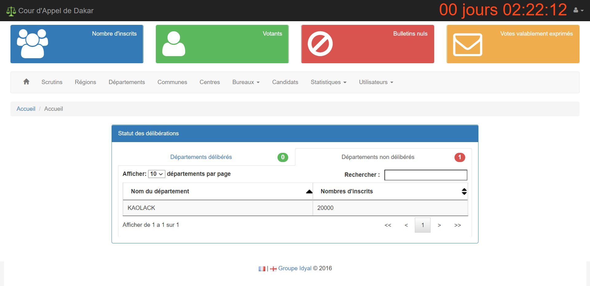
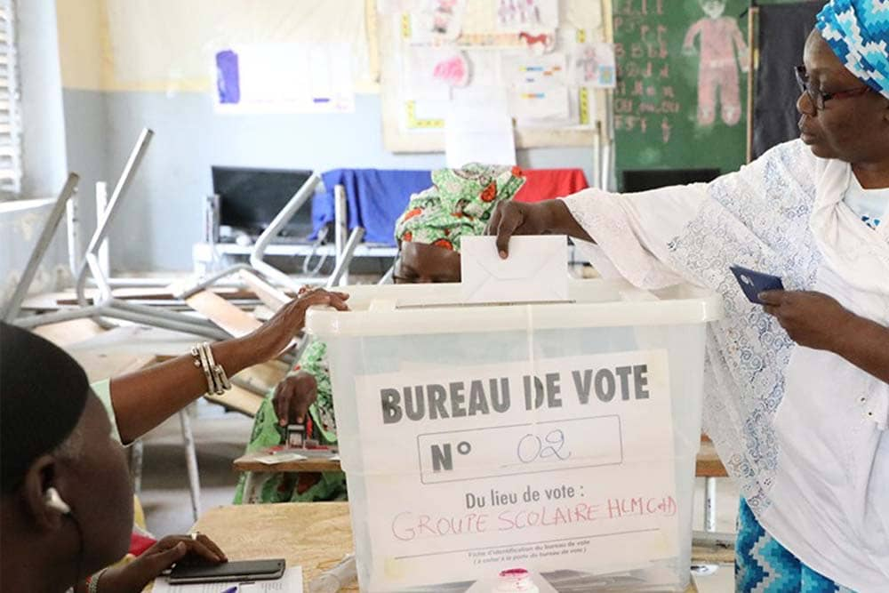

Contexte
La Cour d’Appel avait besoin d’un outil capable de saisir, consolider et présenter les résultats provisoires dans un contexte sensible et contraint par le temps.
Contribution
Analyse des besoins avec l’équipe, rédaction du backlog, participation à l’architecture MVC, développement des fonctionnalités métier et des interfaces de saisie, tests unitaires et intégration.
Contribution personnelle : développement au sein de l’équipe projet d’Idyal SA.

